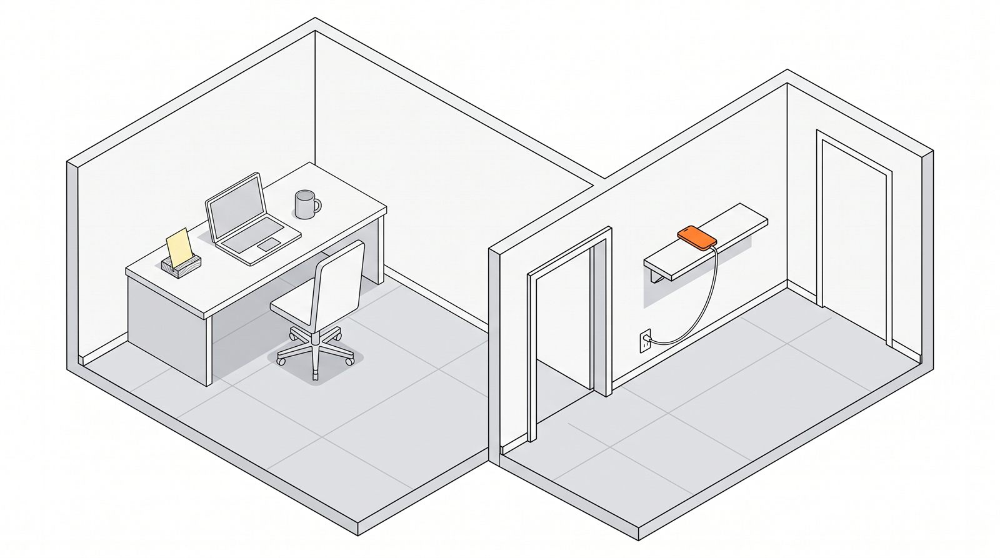

机の上にスマホを置くとなぜ集中できないのか — 視界から外す3段階

- 通知が鳴らなくても、視界にスマホがあるだけで「見なくていい」と判断する処理が繰り返し発生します。集中が削られるのはこの分です。
- 画面を伏せるだけでは足りません。効果が変わる境目は「座ったまま手が届くかどうか」です。
- 机の上は空にするのではなく、今日やることを書いた紙・時間が分かるもの・飲み物の3つだけを残すのが基本形です。
机にスマホがあると、なぜ集中できないのか
通知が鳴っていなくても、視界の隅にスマホがあると意識は定期的にそちらへ向かいます。手に取らなくても「見なくていい」と判断する処理が発生し、その都度わずかに思考が途切れます。
1回あたりは一瞬でも、作業中に何十回も起きれば無視できない量になります。集中できない理由を自分の意識に求める人は多いのですが、机の上に何が置いてあるかのほうが効いていることがあります。
画面を下に伏せて置く人は多いものの、効果は限定的です。伏せていても、そこに何があるかは分かっています。視界から消しても、位置を覚えている限り意識は向きます。だから「見えないようにする」より「取りに行く手間を作る」ほうが効きます。
視界から外す3段階と、その効果の差
伏せる・引き出しに入れる・立ち上がらないと届かない場所へ置く、の3段階があります。効果がはっきり変わるのは3段階目です。
| 段階 | やること | 効果 | 向いている場面 |
|---|---|---|---|
| 段階1 | 画面を下に伏せる | 小：通知の光は防げるが、手を伸ばせば届く | 30分程度で終わる作業 |
| 段階2 | 引き出しや鞄に入れる | 中：視界からは消えるが、座ったまま開けられる | 2時間程度までの作業 |
| 段階3 | 立ち上がらないと届かない場所へ置く | 大：無意識の手つきでは取りに行けなくなる | まとまった時間の作業 |
いきなり段階3にする必要はありません。ただし段階1と段階2は、集中が切れかけた瞬間には障害になりません。手を伸ばす、引き出しを開けるという動作は、その状態の自分を止められないためです。「座ったまま手が届くか」が実質的な境界線になります。
机の上に残していいものは何か
何を外すかと同じくらい、何を残すかが効きます。今日やることを書いた紙・時間が分かるもの・飲み物の3つは残す価値があります。
- 今日やることを書いた紙：画面の中のタスク管理は、確認するたびに他のものが目に入ります。紙に書いて机に置いておけば、確認のコストがゼロになり、他へ逸れる経路もありません。
- 時間が分かるもの：時間を確認するためにスマホを見る、というのはよくある入口です。時計や砂時計など、時間だけを表示するものを1つ置いておくと、この入口が塞がります。
- 飲み物：席を立つ理由を減らします。立ち上がった流れでスマホを取りに行く、という連鎖が起きにくくなります。
逆に、書類の山、読みかけの本、充電ケーブル、使っていない文具は外します。判断の対象になるものが視界にあるだけで、そのつど小さな選択が発生します。
通知そのものを減らすには
物の配置を変えても、手元のパソコンから通知が出ていれば同じことです。数が多いので、順番を決めて上から処理します。
- 音を止める：まず作業中は音を出さない設定にします。音は視界と違って避けようがないので、効果がいちばん大きい。
- バッジと画面上の表示を消す：赤い数字は、開く理由を作り続けます。
- アプリ単位で判断する：「今すぐ知る必要があるか」だけを基準に、1つずつ切っていきます。迷ったら切って構いません。困ったら戻せます。
- 残すものを先に決める：全部切ると不安になるので、通知を許可するアプリを先に決めておくほうが実務的です。
この状態を続けるための条件
戻す場所を決める・作業の単位を決める・完璧を目指さない。この3つが揃うと定着します。
- 元に戻す場所を決めておく：作業が終わったらどこに戻すかを決めておかないと、机の上に散らかった状態が定着します。
- 作業の単位を決める：終わりの見えない状態で机に向かうと、スマホを見る理由が生まれます。25分でも60分でも、区切りを先に決めます。
- 完璧を目指さない：段階1でも、何もしないよりは効きます。段階3が続かないなら段階2に戻せばいい、という程度に考えたほうが長持ちします。
よくある質問
仕事の連絡が来るので、スマホを完全に離せません。
全部を切る必要はありません。通知を許可する相手やアプリを先に決めておき、それ以外を止めます。そのうえで端末を手の届かない位置に置けば、必要な連絡は音で気づけて、それ以外では手が伸びない状態が作れます。
画面を伏せるだけでは意味がないということですか？
意味がないわけではなく、効果が小さいということです。短時間の作業なら伏せるだけで足ります。ただし集中が切れかけた瞬間には、手を伸ばす動作は障害になりません。
パソコンで作業する以上、通知は避けられないのでは？
パソコン側にも作業中の通知をまとめて止める機能があります。まず音、次にバッジ、最後にアプリ単位という順番で減らすと、必要な通知を残したまま数を絞れます。
机を片付けても集中できません。
机の上が原因でない可能性があります。作業の区切りが決まっていない、そもそも何をやるかが決まっていない、という状態でも同じことが起きます。今日やることを紙に書き出してから始めると切り分けができます。
本コラムは一般的な作業環境の整理として書いたもので、医学的・心理学的な診断や助言ではありません。
最終更新: 2026年9月7日